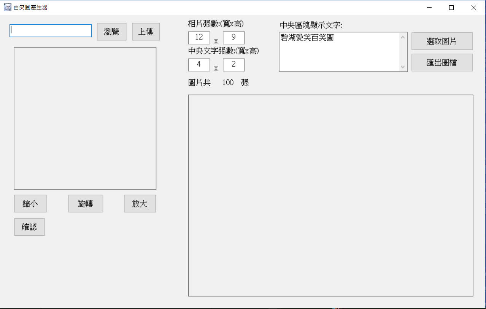
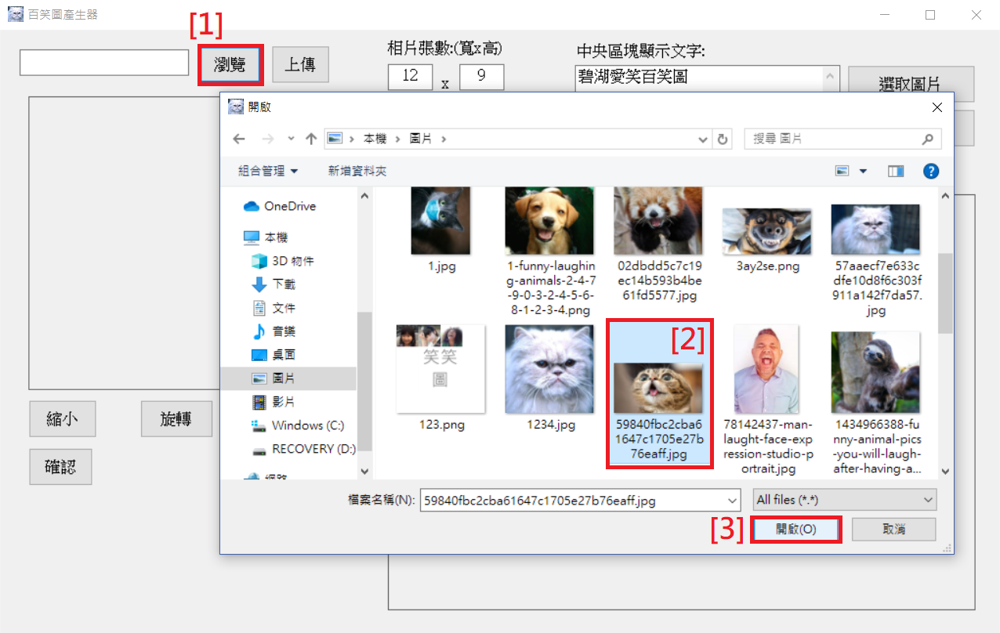
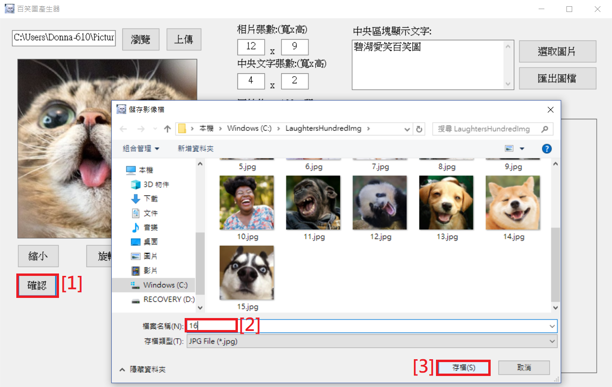
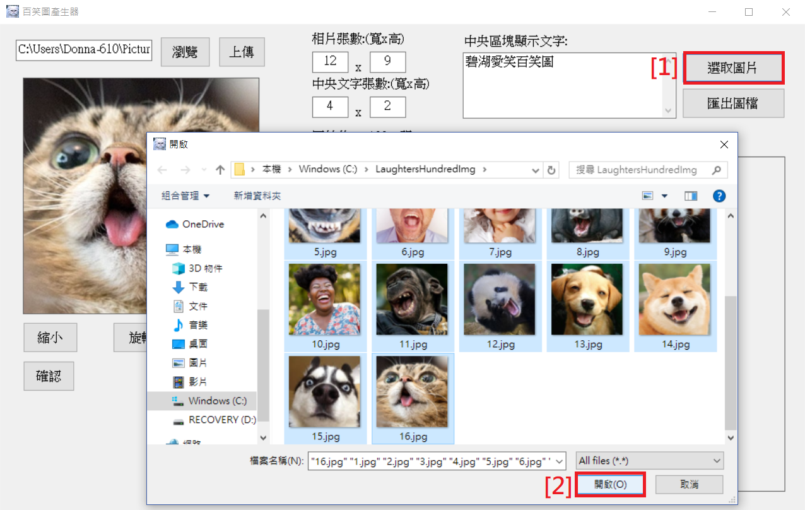
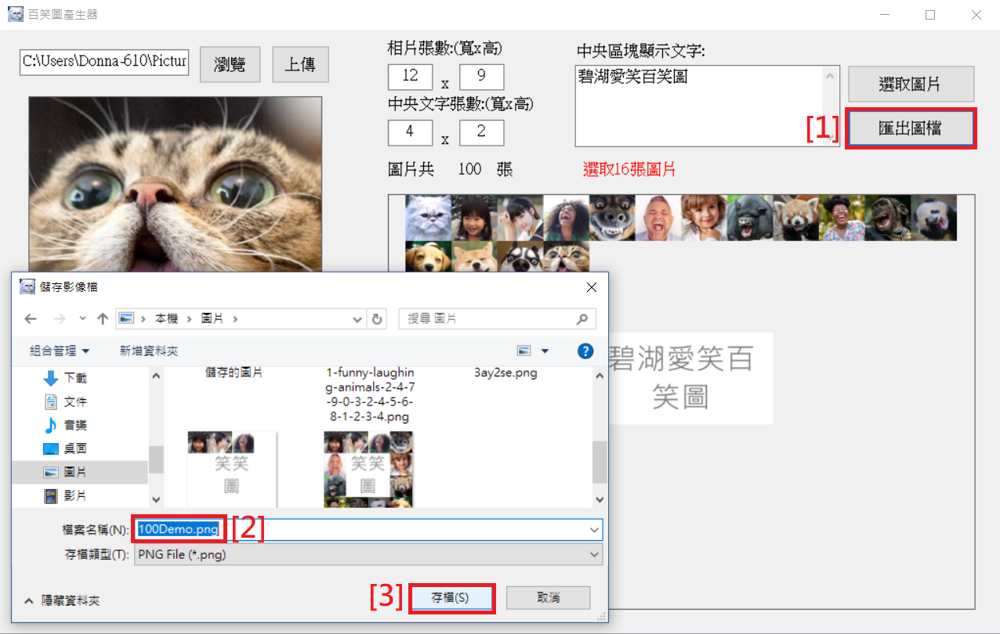
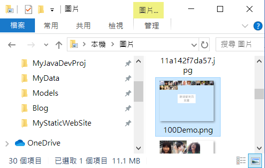
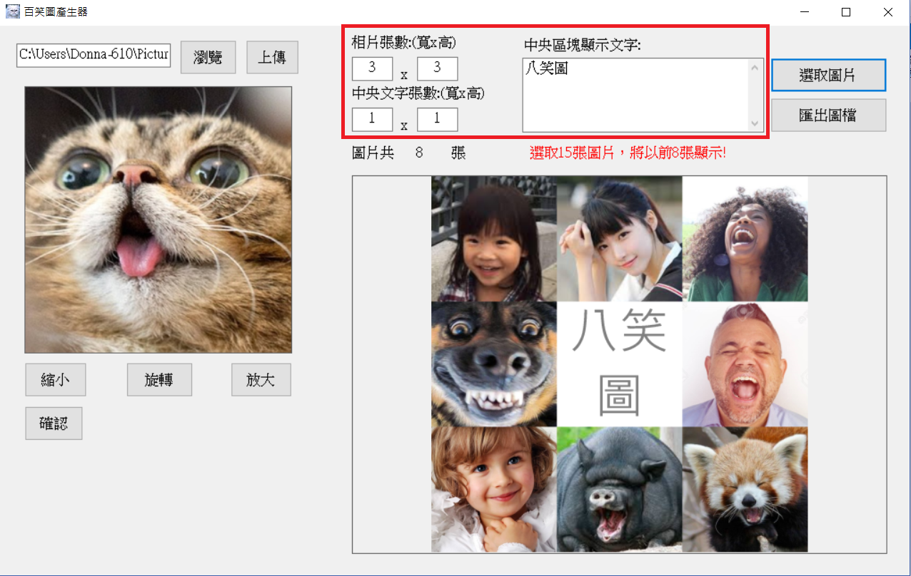

百笑圖WinForm C#程式
功能說明
初始畫面
選取需裁切圖片
編輯裁切區塊：於方形中可使用滑鼠滾輪縮放，並使用滑鼠拖拉圖片定位。
編輯裁切區塊：也可點選放大縮小按鈕進行圖片縮放。
編輯完成點選【確認】，將圖片儲存於路徑C:\LaughtersHundredImg
裁切多張圖片後，可點選右方區塊【選取圖片】，選取想要拼湊的圖片。點選【開啟】後，自動產出拼湊後的組合圖片供預覽。
點選【匯出圖檔】，即可儲存PNG圖檔(背景透明)。
於選取路徑可查看匯出圖檔。
另可編輯圖片張數及中間文字區塊顯示內容。選取張數超過圖片數量，則以前幾張顯示。
